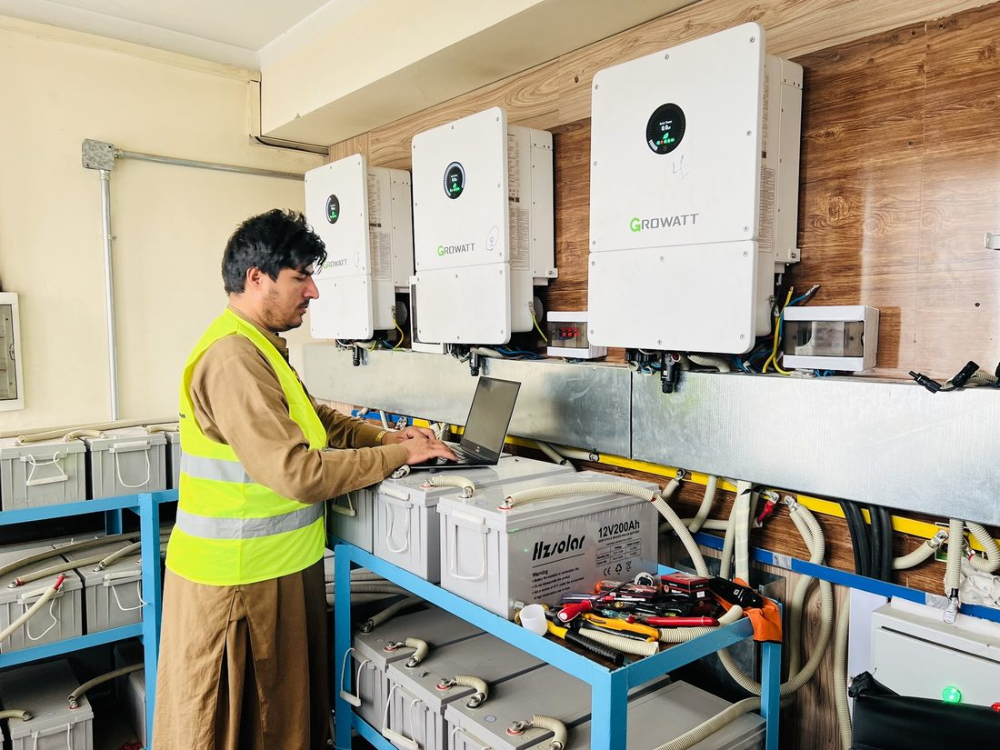

About Deye
The manufacturer, the technology behind a hybrid inverter, and warranty terms on what we sell.
The manufacturer, the technology behind a hybrid inverter, and warranty terms on what we sell.
Deye is a Chinese energy-electronics manufacturer, listed on the Shanghai Stock Exchange, that builds hybrid solar inverters and LiFePO4 lithium batteries. A "hybrid" inverter means one device does three jobs at once: it converts power from your solar panels, charges and manages a lithium battery, and automatically switches your home to battery power the moment city electricity cuts out — all without a separate charge controller or transfer switch. This is why Deye inverters are widely used in Afghanistan, where grid power can be unreliable and a fast, automatic backup switch matters as much as the solar generation itself.
Deye's single-phase hybrid inverters cover most homes and small shops — they connect to standard household wiring. Three-phase models are built for larger houses, commercial buildings and workshops that already run on three-phase power or have heavier motor loads (large water pumps, workshop machinery, elevators). If you're not sure which your building has, check your existing electricity meter and wiring, or send us a photo of your meter box on WhatsApp and we'll help confirm.
Deye hybrid inverters are designed around 48V LiFePO4 lithium batteries. LiFePO4 is preferred over older lead-acid batteries because it handles far more charge/discharge cycles, doesn't need regular maintenance, and includes a built-in Battery Management System (BMS) that protects against over-charging, over-discharging and short circuits. Battery capacity should be chosen based on how many hours of backup you need and which appliances must keep running during an outage — message us your appliance list and we can help size it.
Each Deye inverter model has a maximum solar panel (PV) input it can accept, and a maximum continuous output it can deliver to your home. Bigger inverters can handle more panels and power heavier loads (air conditioners, water pumps, workshop tools) at the same time. Actual backup runtime during an outage depends on your battery size and how much power your appliances draw — this varies household to household, so message us on WhatsApp for an estimate based on your own appliances.
Every Deye inverter and battery we sell carries a 5-year warranty, and select battery models carry up to a 10-year warranty. Message us on WhatsApp before you buy to confirm the exact warranty term on the specific model you're interested in.
Deye Afghanistan sells genuine Deye hybrid inverters and Deye LiFePO4 batteries in Kabul. Message us on WhatsApp for today's price and current stock, or browse our full product catalog.

Our engineer commissioning a hybrid inverter and battery system. Message us on WhatsApp if you'd like our team to size and install a Deye system for your home or business.
Deye یو چینایي انرژۍ-الکترونیک تولیدونکی دی چې د شانګهای سټاک ایکسچینج کې لیست شوی او هایبرید لمریز انورټرونه او LiFePO4 لیتیم بیټرۍ جوړوي. "هایبرید" انورټر پدې معنی چې یوه وسیله په یو وخت کې درې کارونه ترسره کوي: ستاسو د لمریزو پنلونو انرژي بدلوي، لیتیم بیټرۍ چارج او مدیریت کوي، او کله چې د ښار برېښنا قطع شي، ستاسو کور په یوه شیبه کې د بیټرۍ برېښنا ته اړوي. ځکه همدې لپاره Deye انورټرونه په افغانستان کې پراخه کارول کیږي.
د Deye یو فاز هایبرید انورټرونه ډیری کورونه او کوچني دوکانونه پوښي — دا د معمول کورني سیم کشۍ سره نښلي. درې فاز ماډلونه د لویو کورونو، سوداګریزو ودانیو او ورکشاپونو لپاره جوړ شوي چې دمخه یې درې فاز برېښنا لري یا درانه موټور بار لري. که تاسو ډاډه نه یاست، زموږ سره د میتر بکس عکس په واټس اپ کې واستوئ.
د Deye هایبرید انورټرونه د 48V LiFePO4 لیتیم بیټریو په اساس ډیزاین شوي. LiFePO4 د زاړه لاسي-اسید بیټریو په پرتله غوره ګڼل کیږي ځکه چې دا خورا ډیر چارج/ډس چارج سایکلونه زغمي، منظمې ساتنې ته اړتیا نه لري، او دننه BMS لري. د بیټرۍ ظرفیت ستاسو د اړتیا وړ بیک اپ ساعتونو پر بنسټ ټاکل کیږي — خپل د وسایلو لیست موږ ته واستوئ ترڅو مرسته وکړو.
هر Deye انورټر ماډل یو اعظمي لمریز پنل دننوت لري چې منلی شي، او یو اعظمي دوامداره تولید چې کولی شي ستاسو کور ته ورسوي. د بندښت پر مهال د بیک اپ اصلي موده ستاسو د بیټرۍ اندازې پورې اړه لري — دا هره کورنۍ ته توپیر لري، نو زموږ سره په واټس اپ کې اټکل لپاره اړیکه ونیسئ.
هر Deye انورټر او بیټرۍ چې موږ یې پلورو ۵ کلن ضمانت لري، او د ځینو بیټرۍ ماډلونو ضمانت تر ۱۰ کلونو پورې رسیږي. د اخیستلو دمخه د دقیقو شرایطو لپاره موږ ته په واټس اپ کې پیغام راولېږئ.
Deye افغانستان په کابل کې اصلي Deye هایبرید انورټرونه او Deye LiFePO4 بیټرۍ پلوري. د نننۍ ورځې د بیې لپاره موږ ته په واټس اپ کې پیغام راولېږئ، یا زموږ بشپړ د محصولاتو کتالوګ وګورئ.
زموږ انجنیر د هایبرید انورټر او بیټرۍ سیسټم نصبوي. که تاسو غواړئ زموږ ټیم ستاسو کور یا سوداګرۍ لپاره د Deye سیسټم اندازه او نصب کړي، موږ ته په واټس اپ کې پیغام راولېږئ.
Deye یک تولیدکننده انرژی-الکترونیک چینایی است که در بورس اوراق بهادار شانگهای ثبت شده و انورترهای هایبرید سولری و بطریهای لیتیوم LiFePO4 تولید میکند. انورتر "هایبرید" یعنی یک دستگاه در آن واحد سه کار انجام میدهد: انرژی پنلهای سولری شما را تبدیل میکند، بطری لیتیوم را شارژ و مدیریت میکند، و به محض قطع برق شهری، خانه شما را به صورت خودکار به برق بطری وصل میکند. به همین دلیل انورترهای Deye در افغانستان به طور گسترده استفاده میشوند.
انورترهای هایبرید تک فاز Deye بیشتر خانهها و دکانهای کوچک را پوشش میدهند. مدلهای سه فاز برای خانههای بزرگتر، ساختمانهای تجاری و ورکشاپهایی ساخته شدهاند که از قبل برق سه فاز دارند یا بار موتوری سنگینتر دارند. اگر مطمئن نیستید، عکس جعبه میتر خود را در واتساپ برای ما بفرستید.
انورترهای هایبرید Deye بر اساس بطریهای لیتیوم LiFePO4 با ولتاژ 48V طراحی شدهاند. LiFePO4 نسبت به بطریهای قدیمی سربی-اسیدی ترجیح داده میشود زیرا سایکلهای شارژ/دشارژ بسیار بیشتری را تحمل میکند، به نگهداری منظم نیاز ندارد، و دارای BMS داخلی است. ظرفیت بطری بر اساس تعداد ساعات بکاپ مورد نیاز شما انتخاب میشود — لیست وسایل خود را برای ما بفرستید تا کمک کنیم.
هر مدل انورتر Deye یک حداکثر ورودی پنل سولری دارد که میتواند بپذیرد، و یک حداکثر خروجی دوامدار که میتواند به خانه شما تحویل دهد. مدت واقعی بکاپ در زمان قطعی برق به اندازه بطری شما بستگی دارد — این از خانهای به خانه دیگر فرق میکند، پس برای تخمین در واتساپ با ما تماس بگیرید.
هر انورتر و بطری Deye که میفروشیم ۵ سال ضمانت دارد، و برخی مدلهای بطری تا ۱۰ سال ضمانت دارند. پیش از خرید برای شرایط دقیق در واتساپ پیام بدهید.
Deye افغانستان انورترهای هایبرید اصلی Deye و بطریهای لیتیوم Deye LiFePO4 را در کابل میفروشد. برای قیمت امروز در واتساپ برای ما پیام بدهید، یا کاتالوگ کامل محصولات را مشاهده کنید.
مهندس ما در حال راهاندازی یک سیستم انورتر هایبرید و بطری. اگر میخواهید تیم ما یک سیستم Deye برای خانه یا کسبوکار شما اندازهگیری و نصب کند، در واتساپ برای ما پیام بدهید.
Send us a photo of your meter box or appliance list on WhatsApp and we'll help you pick the right Deye setup.